자연언어처리 기법의 발전과 활용 사례
이 문서는 초보자를 위해 기초 자연어처리(NLP)의 최강 도구인 ‘트랜스포머’의 작동법과 다양한 실생활 활용 사례를 재미있는 비유와 시각 자료로 상세히 다룹니다.
00. 자연언어처리 기법 및 활용 사례
본격적으로 텍스트 마이닝 내에서 자연어처리 기법이 어떻게 인간의 일을 돕는지 알아봅니다.
[!NOTE]
📖 초심자를 위한 쉬운 해설
AI는 이제 단순 계산기가 아닙니다. 기획안 작성, 영어 번역, 기사 요약, 그림 그리기 등 지적인 사무 업무 전체를 당신 옆에서 함께 보조해 주는 “만능 인턴”으로 진화했습니다.
01. NLP의 영역
자연언어처리는 주로 거대한 분석 프로젝트의 텍스트 전처리와 분석 과정에 전방위로 참여합니다.
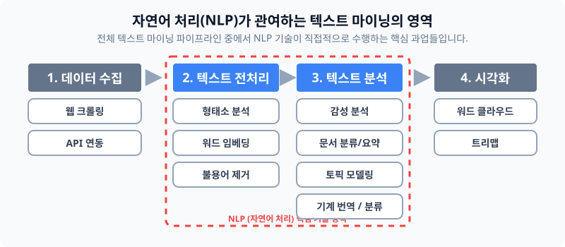
[!TIP]
📖 초심자를 위한 쉬운 해설
전처리는 요리하기 전에 감자 껍질을 깎고 불순물을 제거하는 작업입니다.
분석은 깨끗해진 감자를 가지고 이 요리가 무슨 요리인지 카테고리를 분류하거나(문서 분류), 감자스프를 만드는(문서 생성) 등 진짜 요리가 이루어지는 멋진 과정입니다.
02. 자연언어처리 기법의 패러다임 변화
최근 NLP 기술은 통계 카운트에서 거대한 LLM 빙하로 혁명적 전환을 맞았습니다.
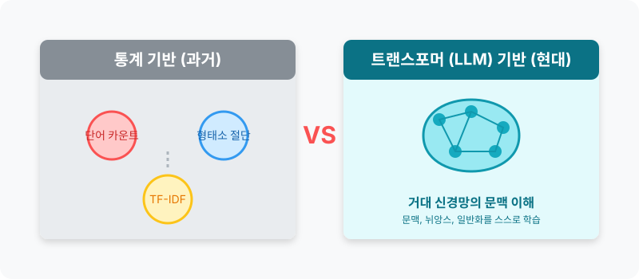
[!WARNING]
📖 초심자를 위한 쉬운 해설
옛날 통계 기반 기법은 “이 문서에 ‘최고’라는 단어가 15번 나왔으니 긍정적인 글!”이라고 점수를 계산하는 계산기와 같았습니다. 빠르고 확실하죠.
하지만 현대의 LLM(트랜스포머)은 비꼬는 말장난, 농담, 숨겨진 슬픔 같은 맥락 전체를 아예 스스로 파악해 버리는 거의 사람 뇌 수준의 통찰력을 가지게 되었습니다.
03. 통계기반 접근: 데이터 전처리
문자들을 기계가 취급할 수 있게 방해물(노이즈)을 덜어내는 단계입니다.
[!NOTE]
📖 초심자를 위한 쉬운 해설
인터넷 댓글 데이터는 욕설, 이모티콘, 오타, 띄어쓰기 오류가 난무하는 쓰레기 더미 수준입니다.
이 텍스트 덩어리를 씻어서["나", "는", "오늘", "밥", "을"]처럼 깨끗한 작은 조각(토큰) 단위로 예쁘게 자르는 것이 바로 전처리의 핵심입니다.
04. 원-핫 인코딩 (One-hot encoding)
단어를 벡터 숫자로 바꾸는 가장 다루기 쉬운 고전 방법 중 하나입니다.
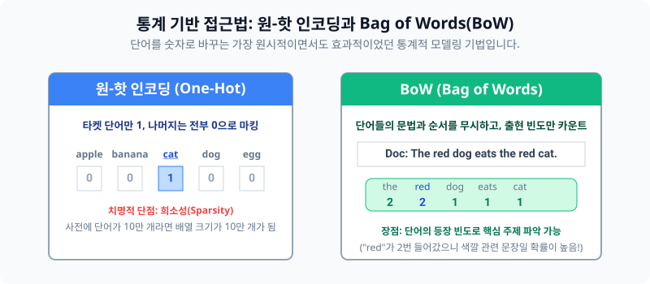
[!IMPORTANT]
📖 초심자를 위한 쉬운 해설
100만 단어가 있는 국어사전 출석부를 상상해 보세요.
‘사과’라는 단어가 5번 학생이라면, 5번 칸에 손을 번쩍 들게(1을 넣음) 하고, 나머지 999,995개의 칸은 전부 결석(0) 자리에 둡니다.
직관적이지만 빈칸(0)이 너무나도 많아서 메모리 낭비가 끔찍하게 심한 방식(희소성(Sparsity) 문제)입니다.
05. Bag of Words (BoW)
출현 빈도를 고려한 텍스트 데이터의 수치화 표현 방법입니다.
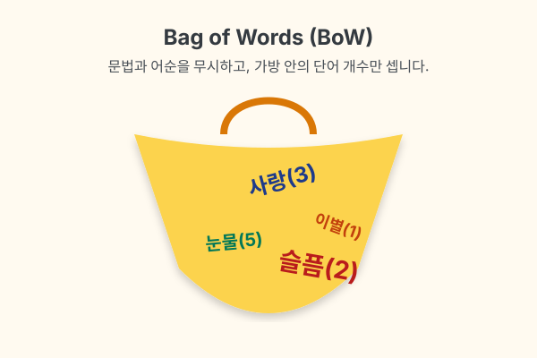
[!TIP]
📖 초심자를 위한 쉬운 해설
문장이 끝났는지, “너가 나를 때렸다”인지 “내가 너를 때렸다”인지 문법 어순은 싹 무시합니다.
텍스트 전체를 커다란 자루(Bag)에 쓸어 넣고 막대기로 저은 다음, “사랑이란 단어는 주머니에 3개, 이별은 1개가 들어있네?” 라고 주사위 빈도수만 계산하는 재밌지만 조금 무식한 텍스트 분석 기법입니다.
06. LLM기반 접근: Transformer
현대 무적의 딥러닝 기술인 LLM의 핵심 아키텍처입니다. 전 세계 AI계를 지배하고 있습니다.
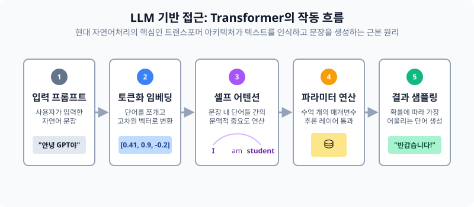
[!NOTE]
📖 초심자를 위한 쉬운 해설
챗GPT가 똑똑한 이유는 바로 이 트랜스포머의 ‘자기 집중(Self-Attention)’이라는 기능 때문입니다.
“그녀가 은행에 가서 돈을 넣었다. 거기는 추웠다.” 라는 문장을 읽었다고 칩시다. 여기서 ‘거기는’이 도대체 어딜 나타내는 건지 컴퓨터는 기가 막히게 ‘은.행.’ 이라고 단어들의 시선을 집중시켜서 맥락을 찾아내는 마술을 부립니다.
07. 활용사례: 문서 분류
텍스트를 입력으로 받아, 미리 정해놓은 서랍(카테고리) 중 어디에 속하는지 예측합니다.
| 분류 사례 | 목적 | 비유적 설명 |
|---|---|---|
| 스팸 필터링 | 이메일의 메일함 격리 | 메일함 입구에 서 있는 “경비원 아저씨” |
| 뉴스 카테고리화 | (정치/경제/사회) 자동 분류 | 신문사 1면에 기사를 척척 꽂아주는 “속독왕” |
08. 활용사례: 문서 생성
입력 자연어를 기반으로 하여 완전히 새로운 문장을 논리적으로 만들어냅니다.
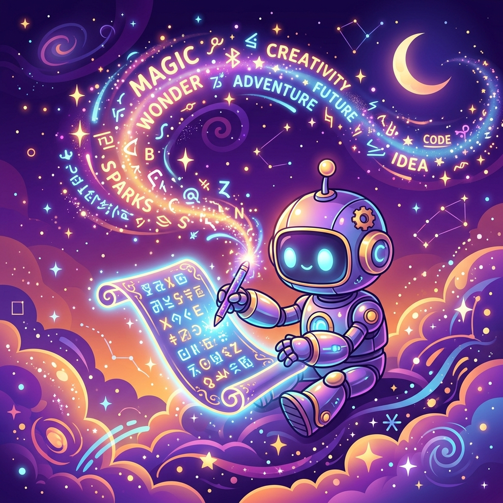
[!TIP]
📖 초심자를 위한 쉬운 해설
“신데렐라와 해리포터가 만나는 소설 10장 써줘”라는 프롬프트를 치면, AI가 마치 창작의 요정이 된 것처럼 무에서 유를 창조해 냅니다. 기계가 앵무새를 넘어 소설가 지위를 넘보게 된 영역입니다.
09. 활용사례: 문서 요약
수많은 텍스트 문단에서 가장 극적인 중심 내용을 자동 추출하여 요약합니다.
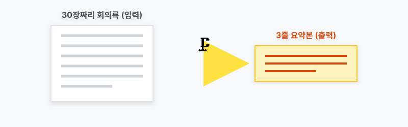
[!NOTE]
📖 초심자를 위한 쉬운 해설
직장인들의 꿈의 기술입니다!
아침에 읽어야 할 수십 장짜리 정부 정책안 텍스트를 강력한 프레스 기계에 넣고 쭈욱 짜내어, 핵심 과즙만 남은 딱 “3줄 요약”만 여러분의 모니터에 던져주는 시간을 지배하는 기술입니다.
10. 활용사례: 감성 분석
텍스트에 나타난 사람들의 성향과 감정을 통계적으로 차갑게 꿰뚫어 봅니다.
| 분석 데이터 자원 | 도출 결과 예시 |
|---|---|
| 배달의 민족, 영화 리뷰 | “면이 다 불었네요(별 1개)” -> 강력한 부정 감지! |
| 선거철 트위터 데이터 | A후보 언급 데이터 분석 -> 우호적 민심 67% 판별! |
11. 활용사례: 토픽 모델링
문서더미 속 어딘가에 은닉되어 있는 추상적인 ‘주제(Topic) 섬’을 돋보기로 발견하는 과정입니다.
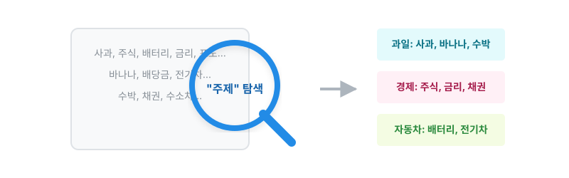
[!IMPORTANT]
📖 초심자를 위한 쉬운 해설
문서들을 읽고 미리 정해진 서랍에 넣는 것(07. 분류)과는 달라도 완전히 다릅니다!
정해진 서랍조차 없는데 기계가 1년치 인터넷 게시글을 쭉 읽어보더니 “어? 유독 사람들이 ‘테슬라’, ‘자율주행차’ 라는 단어들을 막 같이 몰아서 쓰네요? 이거 하나의 ‘뜨는 주제’인 것 같은데요?!” 라며 아무것도 없는 빈 땅에서 스스로 유행하는 토픽을 그룹화해서 사장님에게 제시해 주는 마법 같은 통계 기법입니다.
12. 활용사례: 기계 번역
한 나라의 언어를 인코더-디코더 구조로 문맥을 파악한 뒤 타 언어로 자연스럽게 통역합니다.
| 종류 | 특징 및 설명 |
|---|---|
| 과거: 단어장 번역 | Apple=사과 단어를 일대일 치환. 문맥을 전혀 몰라서 이상한 외계어가 탄생함. |
| 현재: 딥러닝 번역 | 문장 전체 느낌을 모조리 흡수(인코더)한 후, 스무스하게 뱉어냄(디코더) (예: 파파고, 딥플). |
13. 활용사례: 멀티모달 모델 (VQA)
VQA (Visual Question Answering), 사진을 볼 수 있고 글도 쓸 줄 아는 눈과 입이 결합된 기술입니다.
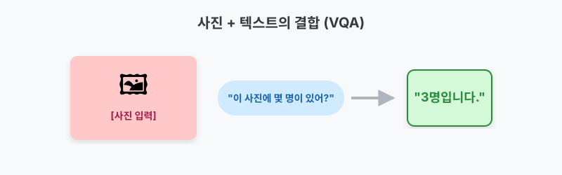
[!TIP]
📖 초심자를 위한 쉬운 해설
시각장애인 분들에게 엄청난 혁명입니다. 강아지 사진을 딱 올려놓고 기계에게 문자로 “이 동물이 지금 자고 있니 달리고 있니?” 라고 물어보면, 눈(컴퓨터 비전)으로 상황을 인식하고 입(NLP)으로 “소파 위에서 자고 있습니다” 라고 텍스트로 대답해 주는 환상적인 콜라보입니다.
14. 활용사례: 멀티모달 모델 (Text-to-Image)
글로 묘사된 프롬프트 명령어를 완벽히 해석하여 그에 맞는 고화질 이미지를 즉시 창조합니다.
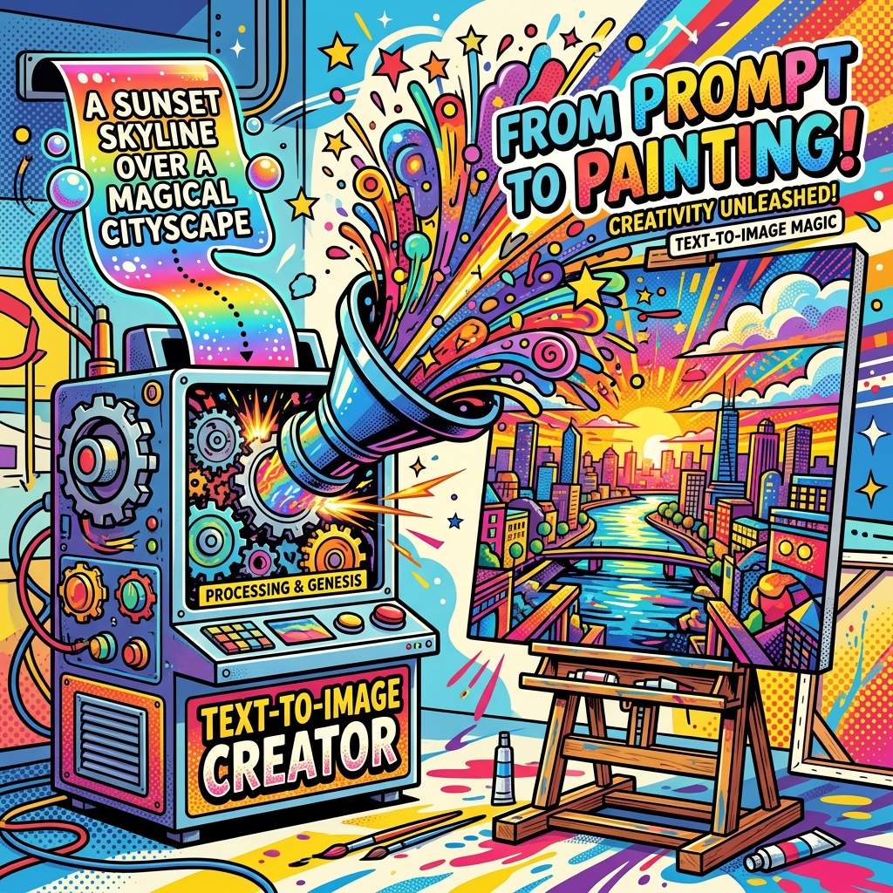
[!NOTE]
📖 초심자를 위한 쉬운 해설
“분홍색 헬멧을 쓴 고양이가 우주에서 커피를 마시는 팝아트!” 라고 글로 적으면, 단 번에 컴퓨터가 상상력을 발휘해 진짜로 고퀄리티 그림을 토해냅니다 (Midjourney, DALL-E 등).
15. LLM 기반 자연어처리의 한계점 (1)
만능으로 보이지만 치명적이고 무서운 부작용 4마리입니다.
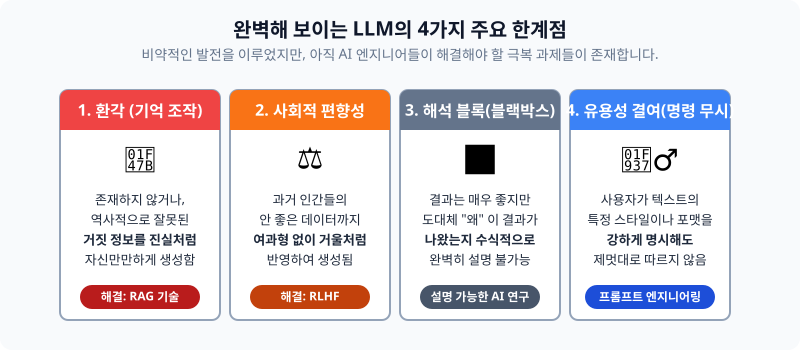
- 환각 (Hallucination): 존재하지도 않는 위인전, 세종대왕의 아이폰 던짐 사건 같은 거짓말을 진짜인 것처럼 당당하게 소설로 적어냅니다.
- 편향성 (Bias): 학습한 인터넷 댓글에 있던 남녀노소 차별, 인종차별 데이터를 뱉어냅니다.
- 블랙박스: 왜 이런 답변이 나왔는지 수천억 개 변수 속에서 아무도 그 인과관계를 증명할 수 없습니다.
- 유용성의 반항: 가끔 시스템 프롬프트(이모지 쓰지 마)를 제멋대로 무시하고 자기 맘대로 답을 내놓습니다.
16. LLM 기반 자연어처리의 한계점 (2) - 보완 기법
위의 미친 단점들을 억제하는 강력한 통제 방패 기술들입니다.
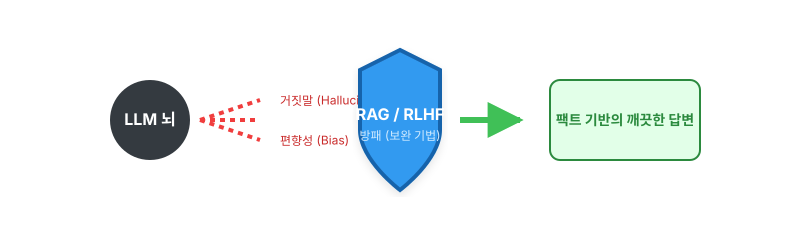
[!IMPORTANT]
📖 초심자를 위한 쉬운 해설
- 환각 방어막 (RAG): AI가 헛소리(환각)를 못 하도록, 밖에서 “회사 공식 매뉴얼”을 미리 억지로 건네주면서 “야 너 없는 소리 지어내지 말고, 이 PDF 책상 위에 올려둔 거에서만 읽어보고 답해!”라고 가두는 검색 기반 보조 기법(결합형)입니다.
- 순응성 교육 (RLHF): AI가 인종차별이나 욕설을 할 때마다 사람(평가자)이 “너 방금 마이너스 5점이야!”라고 혼을 내면서, 점점 착하고 말 잘 듣는 AI로 조련시키는 훈련법입니다.
17. 자연어처리 기법 선택의 기준
모든 실무 과정에서 무조건 무겁고 비싼 최신 LLM만 도입하는 것은 어리석습니다.
| 기준 요소 | 통계 기반 기법 (TF-IDF 등) | 딥러닝 LLM (ChatGPT 등) |
|---|---|---|
| 결과 설명(보고서) | 100% 명확히 증명 및 설명 가능 엑셀화 가능 | ❌ 불가능 (블랙박스) |
| 컴퓨팅 유지비용 | 일반 사무용 노트북 1대로 1초 만에 끝냄 | 수억 원의 거대 GPU 서버 펑펑 돌아감 |
| 고객 응대력(문맥) | 눈치 없음, 단일 단어만 찾음 | 세계관 최고의 눈치와 창작력 |
[!TIP]
📖 초심자를 위한 쉬운 해설
스팸 이메일 하나 걸러내는데 수억짜리 챗봇 엔진을 돌리는 건 파리 잡는데 대포를 쏘는 격입니다!
상황, 자금, 보고해야 할 상사의 취향을 분석하여 가성비 좋은 통계반과 엄청난 LLM 중 최적의 무기를 고르는 똑똑한 엔지니어가 되어야 합니다.